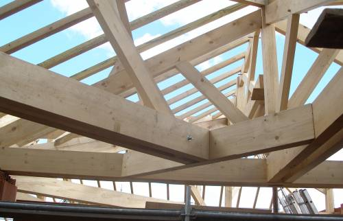
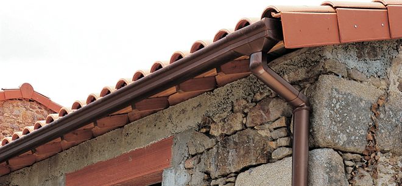
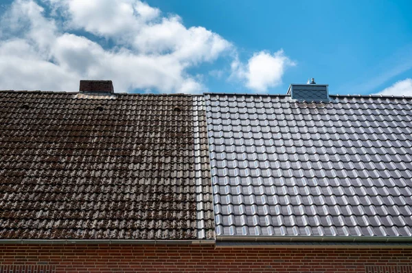

Experts en couverture, zinguerie et isolation depuis plus de 15 ans. Intervention rapide et devis gratuit sous 48h.
Pose et rénovation de tuiles, ardoises et zinc pour une étanchéité parfaite.
Recherche de fuites et remplacement de tuiles cassées après intempéries.
Démoussage et traitement hydrofuge pour prolonger la vie de votre toit.



Remplissez le formulaire et nous vous recontacterons pour un diagnostic gratuit sur place.